知行笔记 UI 图库
离线打开本文件即可浏览全部界面稿。
desktop / 01_notes_home
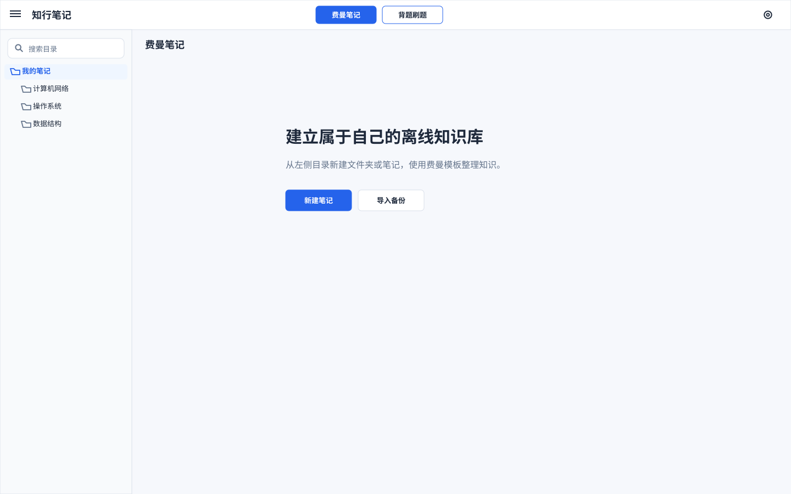
desktop / 02_note_editor
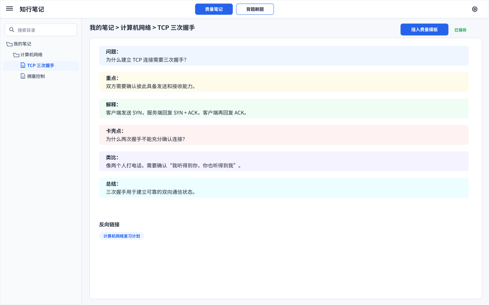
desktop / 03_settings_panel
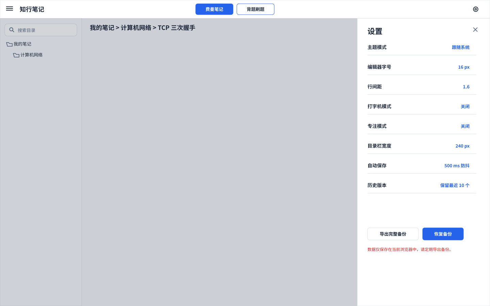
desktop / 04_question_bank_home
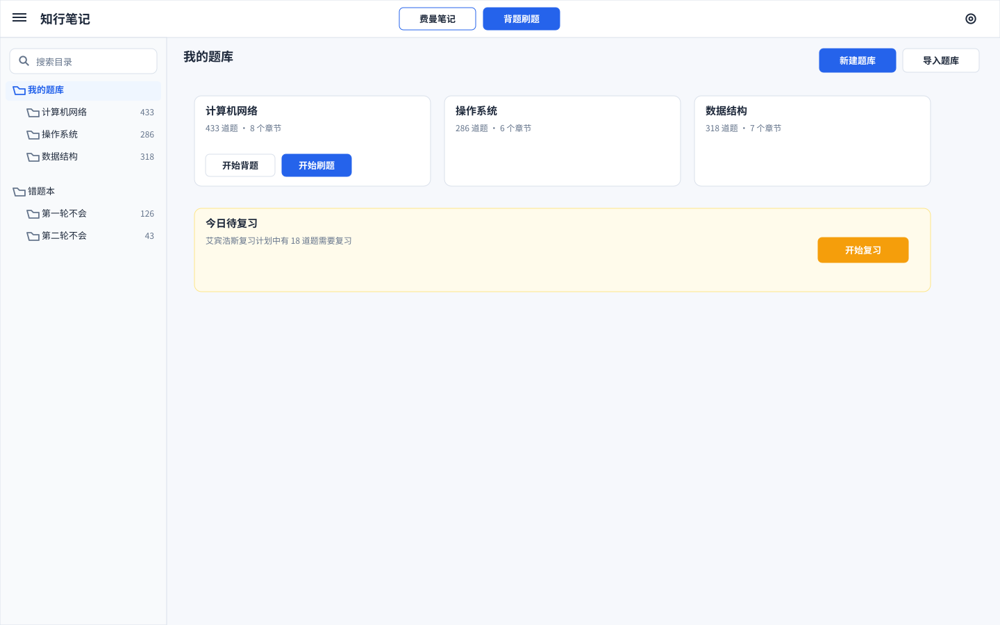
desktop / 05_question_bank_detail
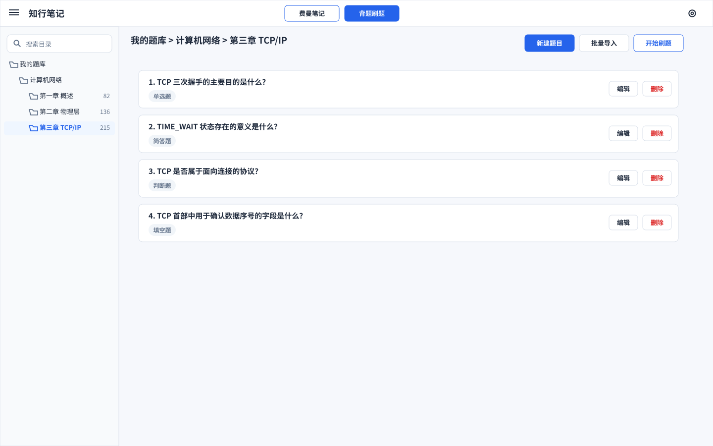
desktop / 06_create_question_modal
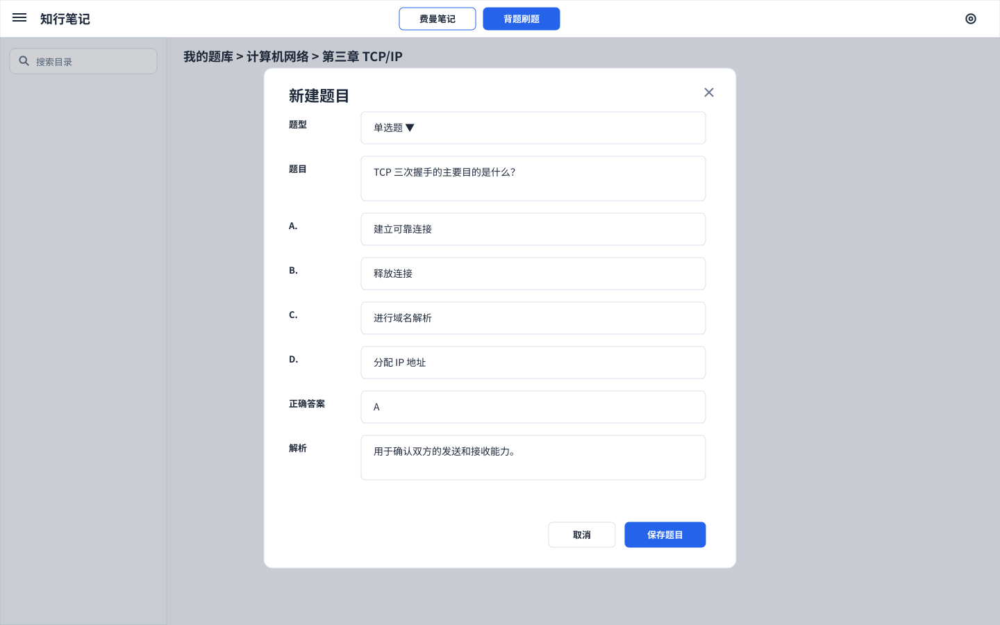
desktop / 07_practice_setup
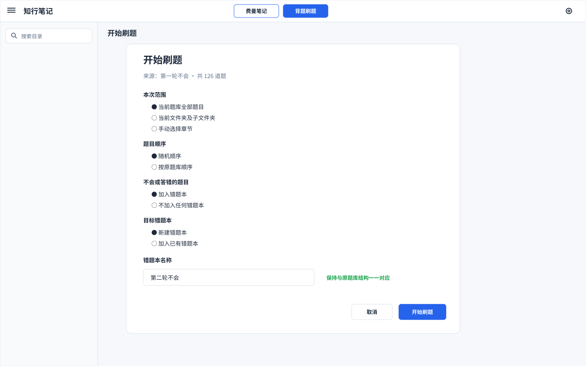
desktop / 08_memorize_mode
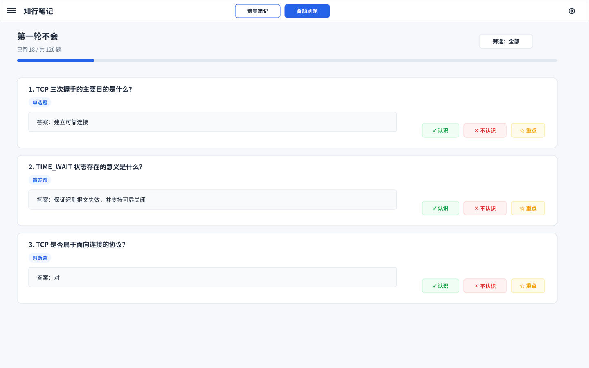
desktop / 09_quiz_single
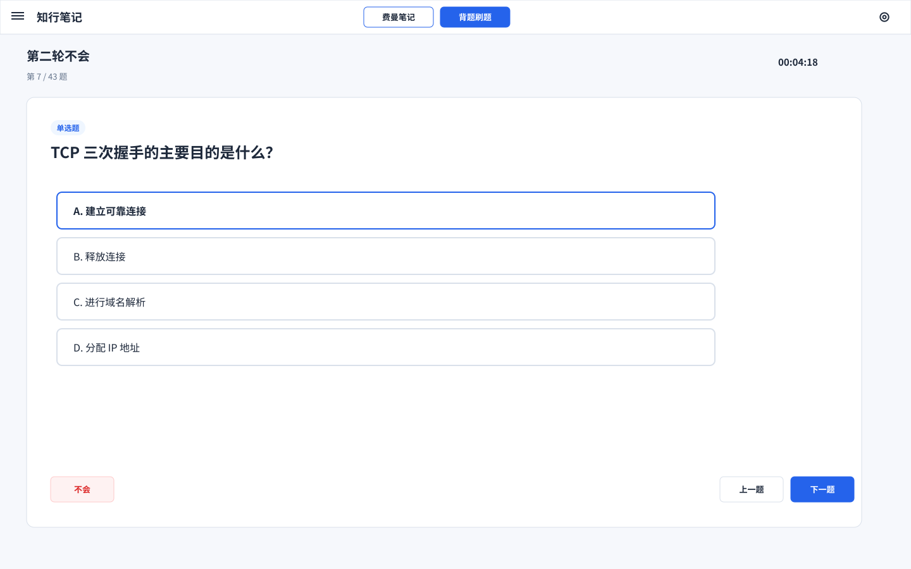
desktop / 10_quiz_feedback_wrong
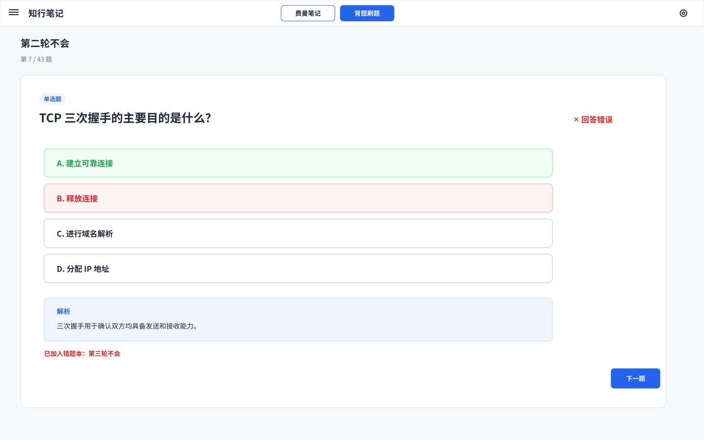
desktop / 11_practice_report
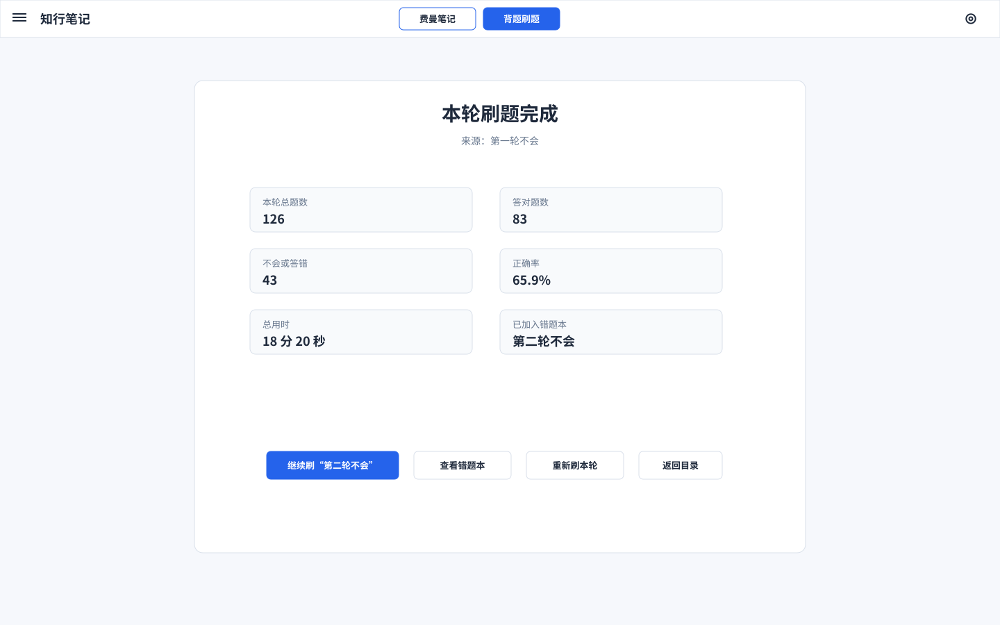
desktop / 12_wrongbook_mirror
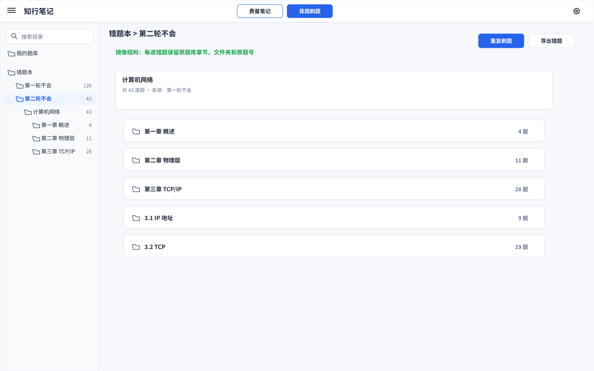
desktop / 13_backup_restore
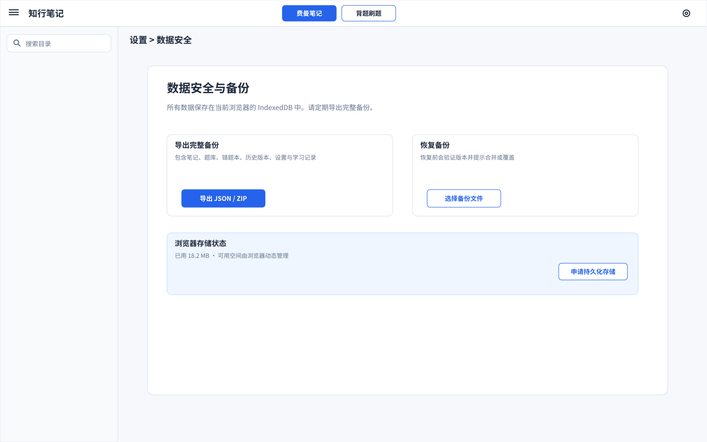
desktop / 14_version_history
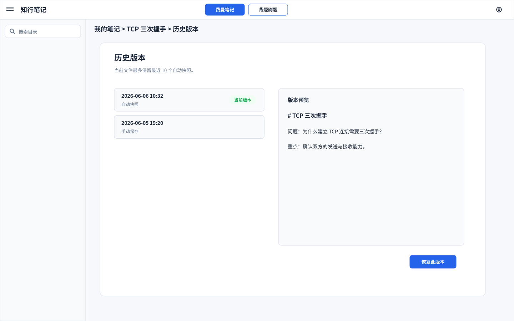
mobile / 01_note_editor_mobile
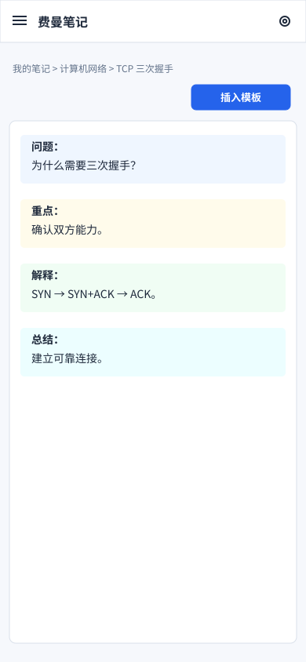
mobile / 02_question_bank_mobile
mobile / 03_quiz_single_mobile
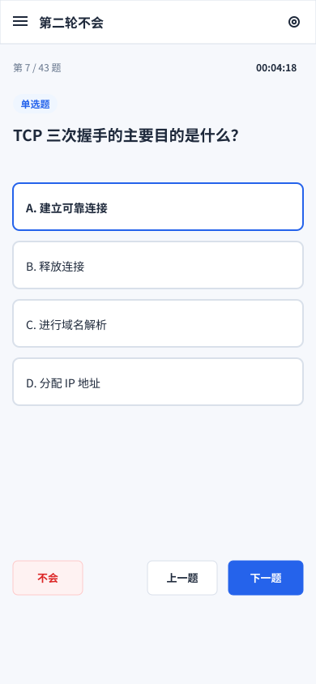
mobile / 04_wrongbook_mobile
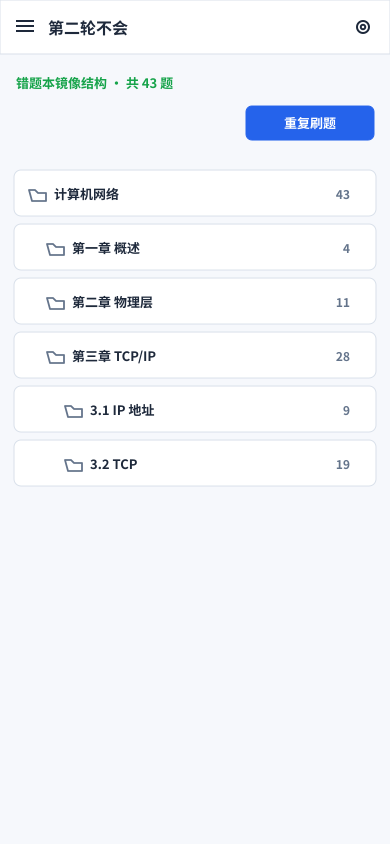
mobile / 05_bottom_sheet_mobile
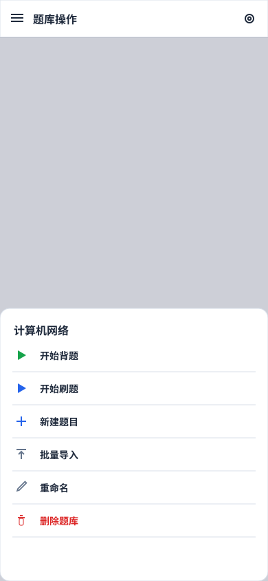